가구제작기능사 (2003-10-05 기출문제)
1과목: 임의 구분
1. 다음 연필 중 경도가 가장 큰 것은?
- H
- F
- HB
- B
(정답률: 85%)

2. 합판으로 만든 제도판의 울거미 재료로서 적당하지 않은 것은?
- 춘향목
- 나왕
- 벚나무
- 낙엽송
(정답률: 61%)
3. 다음 선의 명칭 중에서 가장 굵게 그려야 하는 것은?
- 단면선
- 치수선
- 절단선
- 해칭선
(정답률: 78%)
4. A0 제도용지를 나타낸 그림에서 빗금친 부분의 규격은?
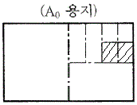
- A1
- A2
- A3
- A4
(정답률: 84%)
5. 도면 작성에 관한 설명 중 옳지 않은 것은?
- 정확히 빨리 그리는 것이 바람직하다.
- 표현 방식이 합리적이고 간편해야 한다.
- 될 수 있는대로 간결하게 그린다.
- 물체가 길어도 단축해서 그리면 안된다.
(정답률: 83%)
6. 원에 내접하는 정오각형을 그리는 방법이 아닌 것은?
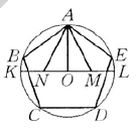
- AO ⊥ KL
- OM = ML
- AM = MN
- AM = AB
(정답률: 62%)
7. 다음 그림과 같은 AB의 선분은 어떤 기하학적 원리인가?
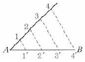
- 평행
- 대칭
- 합동
- 균형
(정답률: 78%)
8. 투시도를 그릴 때 불필요한 도면은?
- 상세도
- 정면도
- 측면도
- 평면도
(정답률: 81%)
9. 유각 투시도의 족선법에서 족선이란 어느 것인가?
- 눈의 높이와 같은 화면상의 수평선
- 화면과 지평면이 만난 선
- 입점에서 물체와 시점간의 연결선
- 지평면에서 물체와 입점간의 연결선
(정답률: 60%)
10. 구성의 요소가 규칙적으로 점점 변화해 가는 상태 즉 계측적인 변화로서 요소의 증대, 혹은 감소의 두 방향성을 가지는 율동은?
- 되풀이 운동
- 점층의 율동
- 자유로운 운동
- 기하학적 율동
(정답률: 81%)
11. 파단선의 표시기호 중 파단되어 있는 것이 명백할 때에 표시하는 기호는?(오류 신고가 접수된 문제입니다. 반드시 정답과 해설을 확인하시기 바랍니다.)
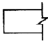
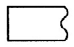
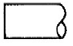
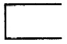
(정답률: 53%)
12. 문달린 책장 설계시 특히 유의해야 할 사항은?
- 책의 두께
- 책의 높이
- 책의 나비
- 책의 수량
(정답률: 76%)
13. 인체계 가구는 어느 것인가?
- 수납장
- 부엌의 작업대
- 침대
- 장농
(정답률: 89%)
14. 조형의 원리 중 반복에 대한 설명으로 옳지 않은 것은?
- 같은 형식의 구성이 반복되면 시선이 이동하여 상대적으로 운동감을 준다.
- 반복이 많게 되면 힘의 균일효과가 나타나서 표정은 균일하게 되며 풍부함이 더해진다.
- 반복은 시각적으로 힘의 강약효과를 줄 수 없다.
- 반복이 거듭되는 현상을 교체라고 한다.
(정답률: 68%)
15. 제 3각법으로 그린 투강도의 위치가 바른 것은?
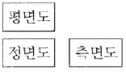
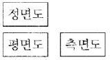
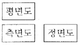
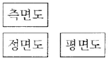
(정답률: 86%)
16. 제재계획을 할 때 침엽수의 취재율은 몇 % 이상이어야 하는가?
- 30%
- 50%
- 70%
- 90%
(정답률: 82%)
17. 목재의 습도가 어느 정도일 때 부패균의 발육이 가장 왕성한가?
- 60%
- 70%
- 80%
- 90%
(정답률: 68%)
18. 변재와 심재에 대한 설명 중 옳은 것은?
- 심재가 변재보다 재질이 무르고 내구성이 작다.
- 심재가 변재보다 신축성이 작다.
- 변재보다 심재가 수분이 많다.
- 변재보다 심재가 강도가 약하다.
(정답률: 67%)
19. 화이트 브론즈라고 하며 문짝, 손스침, 전기기구 등에 많이 쓰이는 합금은?
- 아연
- 양은
- 주석
- 니켈
(정답률: 64%)
20. 목재의 구조용재 함수율은 어느 정도 이하가 좋은가?
- 50%
- 40%
- 20%
- 15%
(정답률: 83%)
2과목: 임의 구분
21. 목재의 색채에 대하여 기술한 것 중 틀린 것은?
- 목재의 색소는 목질의 부패를 막는 효과가 있다.
- 목재의 색은 세포막에 함유되는 화학물질에 의하는 것이 아니라 구조상의 차이에 의한다.
- 목재의 자연 색채나 아름다운 느낌이 있는 것은 공예, 가구 등에 이용된다.
- 목재에는 착색성이 있으므로 착색제를 써서 질이 낮은 재를 고급재로 보이게 된다.
(정답률: 64%)
22. 강당이나 극장 등의 안벽에 음향조절 효과로 쓰이는 제품은?
- 플로어링 블록
- 인슐레이션 보드
- 파티클 보드
- 코펜하겐 리브
(정답률: 83%)
23. 온도와 습도를 조절하는 방법으로 전진식과 분실식이 있는 목재 인공건조법은 무엇인가?
- 훈연건조
- 증기건조
- 전열건조
- 진공건조
(정답률: 79%)
24. 식물 섬유를 주원료로 하여 주로 건물의 내장 및 흡음·단열·보온을 목적으로 성형한 비중 0.4 미만의 보드는?
- 연질 섬유판
- 경질 섬유판
- 반경질 섬유판
- 파티클 보드
(정답률: 71%)
25. 목재의 역학적 성질에 대한 설명 중 틀린 것은?
- 인장 및 압축강도는 목재를 인장시키고 압축시킬 때 생기는 외력에 대한 내부저항을 뜻한다.
- 섬유의 평행 방향의 인장강도는 목재의 제강도 중에서 가장 크다.
- 목재섬유에 직각 방향의 인장강도는 평행 방향에 비해 상당히 크다.
- 섬유의 평행 방향에 대한 강도가 가장 크고 섬유의 직각 방향에 대한 것이 가장 작다.
(정답률: 67%)
26. 특수 황동의 설명으로 옳지 않은 것은?
- 주석 활동은 전연성이 좋아 관 및 판의 용도로 사용된다.
- 연입 황동은 절삭성이 좋고 기어, 나사 용도로 사용된다.
- 알루미늄 황동은 내식성이 크며 열 교환기관에 사용된다.
- 규소 활동은 내식성이 좋고 기어 용도로 사용된다.
(정답률: 54%)
27. 내수성·내열성이 우수하여 옥외에서 장기간 견디는 목재접착, 특히 내수합판·옥외 등 집성목재의 제조에 사용되는 접착제는?
- 레조르시놀수지 접착제
- 멜라민수지 접착제
- 실리콘수지 접착제
- 페놀수지 접착제
(정답률: 50%)
28. 침엽수에 대한 일반적인 설명으로 옳은 것은?
- 가벼운 편이나 송진이 많아 가공이 비교적 용이하지 않다.
- 피자식물의 외떡잎 식물이다.
- 직통 대재가 많으나 비교적 경목이 많다.
- 구조재, 가설재로 쓰인다.
(정답률: 67%)
29. 목재의 건조 목적으로서 맞지 않은 것은?
- 생목시의 강도보다 건조시키면 4~5배가 증대된다.
- 부식을 방지하고 내구성을 높인다.
- 접착성이나 도장성이 좋아진다.
- 방부제나 합성수지의 주입이 용이해진다.
(정답률: 72%)
30. 목재를 서로 접합하여 의자의 좌판이나 테이블의 다리 등을 제작하는데 사용하는 이음은?
- 턱 이음
- 맞댄 이음
- 엇걸이 이음
- 결 이음
(정답률: 50%)
31. 연성이고 가공성이 풍부하여 판재, 선, 봉 등으로 만들기가 용이한 금속재는?
- 알루미늄
- 동
- 납
- 아연
(정답률: 57%)
32. 목재의 자연건조에 관한 설명으로 옳지 않은 것은?
- 넓은 장소가 필요하다.
- 건조 시간이 많이 걸린다.
- 기건 함수율 이하로 건조할 수 없다.
- 일시에 많은 목재를 건조할 수 있다.
(정답률: 77%)
33. 섬유판 중 파티클 보드의 특성으로 옳지 않은 것은?
- 합판에 비해 가격이 저렴하다.
- 방향간 수축률이 적다.
- 방음, 흡음의 효과가 크다.
- 가공성이 좋고, 내수성이 약하다.
(정답률: 66%)
34. 비철금속 재료로 내식성이 크고 주조하기 쉬우며 표면은 특유의 아름다움이 있어 장식철물, 공예재료로 많이 쓰이는 것은?
- 청동
- 아연
- 니켈
- 알루미늄
(정답률: 79%)
35. 밤나무, 벚나무, 오동나무 등은 어느 과에 속하는 식물인가?
- 송백과 식물
- 쌍떡잎 식물
- 외떡잎 식물
- 편백과 식물
(정답률: 79%)
36. 톱날 어김의 적당한 수치는? (단,t는 톱몸의 두께)
- 1.0 ~ 1.3t
- 1.8 ~ 2.0t
- 1.3 ~ 1.8t
- 2.2 ~ 3.0t
(정답률: 67%)
37. 톱니의 날어김은 톱니 높이의 어느 부분부터 하는가?
- 1/2부분부터
- 1/3부분부터
- 1/4부분부터
- 3/4부분부터
(정답률: 68%)
38. 수압대패 조정 순서가 올바른 것은?
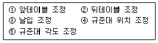
- ② → ① → ③ → ④ → ⑤
- ③ → ① → ② → ④ → ⑤
- ① → ② → ③ → ④ → ⑤
- ④ → ⑤ → ① → ② → ③
(정답률: 64%)
39. 대패 사용에 관한 설명 중 적당하지 않은 것은?
- 끊는 날의 각은 보통 38°가 적당한다.
- 날끝이 대팻집 밑바닥에 나오는 정도는 초벌일 때 0.5mm가 좋다.
- 덧날의 끝과 대팻날의 끝과의 차이는 초벌대패에서 0.4mm~0.3mm가 좋다.
- 대패를 사용치 않을 때는 날을 약간 빼고 옆으로 세워 놓는 것이 좋다.
(정답률: 59%)
40. 사각형의 구조물을 조립하고 직각도를 검사하는 방법으로 옳지 않은 것은?
- 대각선의 길이가 같은지를 확인한다.
- 직각자로 모서리를 재 본다.
- 마주보는 두 변의 길이가 같은가를 검사한다.
- 모형을 만들어서 대본다.
(정답률: 74%)
3과목: 임의 구분
41. 암부재 주먹장 만들기 방법으로 옳지 않은 것은?
- 숫부재 주먹 모양을 암부재 마구리면에 옮겨 그린다.
- 마구리면에 그려진 선을 목재 나뭇결에 직각 방향으로 긋는다.
- 켜기용 등대기 톱으로 켜고 끌로 따낸다.
- 숫부재와 마찬가지로 연귀만들 선까지만 따낸다.
(정답률: 59%)
42. 이음과 맞춤에서의 유의사항 중 옳지 않은 것은?
- 재료는 가급적 적게 깎아낸다.
- 공작이 간단한 것을 쓰며 모양에 치중하지 않는다.
- 이음, 맞춤은 응력이 집중하는 곳에 설치해야 효과가 높다.
- 이음, 맞춤의 단면은 응력의 방향에 직각으로 한다.
(정답률: 74%)
43. 서랍의 뒷널을 옆널과 가장 튼튼히 접합시키는 방법으로 좋은 것은?
- 옆널 사이에 뒷널을 넣고 나사못으로 조인다.
- 주먹장맞춤을 하고 바닥판과 뒷널을 나사못으로 조인다.
- 연귀가공을 한 후 접착제로 붙인다.
- 뒷널과 바닥판은 접착제로 붙이고 옆널과는 무두못으로 연결한다.
(정답률: 69%)
44. 꽂음촉 맞춤의 설명으로 옳지 않은 것은?
- 공작이 쉽고 약한 장부맞춤보다 우수하다.
- 단단한 나무로 둥글게 만들며 촉의 굵기는 보통 10~30mm 정도로 한다.
- 꽂음촉은 접착력을 늘리기 위해 표면을 거칠게도 한다.
- 장부맞춤의 약식으로 창호공작에 많이 쓴다.
(정답률: 53%)
45. 건설현장에서 경고, 주의에 관한 안전색은?
- 녹색
- 흰색
- 노란색
- 푸른색
(정답률: 88%)
46. 꽂음촉 만들기 설명 중 잘못된 것은?
- 꽂음촉의 지름은 꽂음촉 구멍보다 약간 굵게 한다.
- 꽂음촉 재료의 길이는 200mm 이상 나뭇결이 곧은 것을 선정한다.
- 옹이나 흠이 있는 나무는 피한다.
- 꽂음촉 재료는 연해야 접착제와 잘 결합해서 튼튼한다.
(정답률: 70%)
47. 둥근톱 기계 사용시 안내자 면과 둥근톱 사이 앞쪽이 좁으면 어떠한 현상이 일어나는가?
- 톱질된 목재가 톱날과 안내자 사이에 끼워지는 상태로 되어 반발하므로 위험하다.
- 가공한 재료의 나비가 고르지 못하다.
- 일정한 나비로 켜기가 잘된다.
- 톱날과 안내자 사이에 끼워져 기계의 회전이 멈추게 된다.
(정답률: 56%)
48. 다음 도면과 같이 제작하려면 꽂임촉은 몇 개가 필요한가?
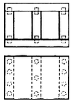
- 11개
- 17개
- 22개
- 26개
(정답률: 80%)
49. 톱질 방법으로 옳지 않은 것은?
- 톱질은 당길 때 힘을 주고, 밀 때는 힘을 주지 않는다.
- 톱에 무리한 힘을 주지 않는다.
- 톱질을 할 때는 팔에만 힘을 주어 균형을 잃지 않아야 한다.
- 톱질을 시작할 때와 끝날 때는 가볍게 톱질한다.
(정답률: 78%)
50. 조임쇠의 종류 중에서 가장 큰 구조물을 조일 수 있는 것은?
- 평행조임쇠
- C클램프
- 핸드스크루
- 스틸바
(정답률: 83%)
51. 평면 공간에 나타내고자 하는 형상을 두드러지게 조각하여 형상이 가지고 있는 반입체적인 모습으로 효과를 얻는 기법을 무엇이라 하는가?
- 부조
- 환조
- 투조
- 상감
(정답률: 66%)
52. 그무개의 종류가 아닌 것은?
- 장부 그무개
- 평형 그무개
- 줄 그무개
- 쪼개기 그무개
(정답률: 49%)
53. 심재 공정도의 순서로 옳은 것은?
- 자재투입 - 갱립소 - 2면포 - 크로스커팅소 - 타카작업 - 스프레더 - 콜드프레스
- 자재투입 - 크로스커팅소 - 2면포 - 갱립소 - 스프레더 - 타카작업 - 콜드프레스
- 자재투입 - 2면포 - 스프레더 - 갱립소 - 타카작업- 크로스커팅소 - 콜드프레스
- 자재투입 - 타카작업 - 갱립소 - 스프레더 - 크로스커팅소 - 2면포 - 콜드프레스
(정답률: 54%)
54. 서랍의 제작 방법 중 맞춤기법의 장점으로 옳지 않은 것은?
- 부재와 부재간의 결합이 견고하다.
- 부재간 뒤틀림이나 변형이 적다.
- 외관이 아름답다.
- 대량 생산이 가능하다.
(정답률: 80%)
55. 끝까지 서랍을 열었을 때, 서랍의 탈락을 방지하기 위한 기능을 하는 것은?
- 레일
- 베어링
- 스톱퍼 장치
- 케이싱
(정답률: 84%)
56. 홈파기, 구멍뚫기, 곡명 가공 등에 사용되는 목공 기계는?
- 둥근톱 기계
- 루터 기계
- 띠톱 기계
- 드릴 기계
(정답률: 82%)
57. 작업 전, 작업 중, 작업종료 후 하는 점검은?
- 정기점검
- 수시점검
- 임시점검
- 일상점검
(정답률: 63%)
58. 목재 접합 때 접착제로 쓰이지 않는 것은?
- 아교
- 카세인
- 멜라민수지풀
- 프라이머
(정답률: 80%)
59. 다음 그림의 접합의 명칭으로 맞는 것은?
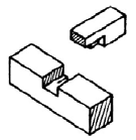
- 통넣은 주먹장맞춤
- 숨은 주먹장맞춤
- 두겁 주먹장맞춤
- 내림 주먹장맞춤
(정답률: 78%)
60. 다음 중 접착 기계가 아닌 것은?
- 콜드프레스
- 핑거조인트
- 스프레더
- 핫프레스
(정답률: 62%)
연필의 경도는 연필의 석회와 흑연의 비율에 따라 결정됩니다. 경도가 높을수록 연필의 석회 함량이 높아지고, 연필의 선이 더욱 짧고 굵어집니다.
"H"는 High Hardness의 약자로, 가장 경도가 높은 연필입니다. 따라서 "H" 연필은 다른 연필에 비해 더욱 석회 함량이 높아서 선이 더욱 짧고 굵어지며, 더욱 어두운 색을 낼 수 있습니다.